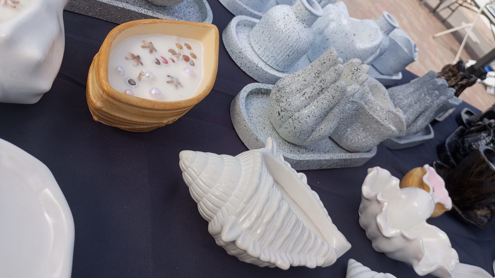

Ikdienā
Noslaukiet ar mīkstu, mitru drānu. Lielākiem netīrumiem — maigs ziepjūdens.

Kopšana
Mūsu akmens ir izturīgs, bet arī tam patīk rūpes. Šeit ir viss, kas jāzina.
Noslaukiet ar mīkstu, mitru drānu. Lielākiem netīrumiem — maigs ziepjūdens.
Sargājiet āra darbus no stāvoša ūdens. Pirms sala izlejiet ūdeni no strūklakām.
Stādiet tieši akmens podā ar drenāžas slāni vai ielieciet plastmasas podiņu.
Dārza darbi nebaidās no lietus. Rudenī notīriet lapas, lai ūdens nestāv padziļinājumos.
Sveces turiet prom no tiešas saules un radiatoriem, lai vasks nekūst un tonis nebalē.
Ūdeni mainiet reizi nedēļā un tīriet sūkni, lai akmens paliek gaišs un tīrs.
Sveces otrā dzīve
Tie var sabojāt akmens virsmu un krāsu. Izmantojiet tikai maigus līdzekļus.
Arī stiegrots akmens var ieplaisāt, ja nokrīt uz cietas virsmas.
Ūdens, kas sasalst traukā, var to saplēst. Ziemā āra podus novietojiet zem jumta vai apgrieziet otrādi.